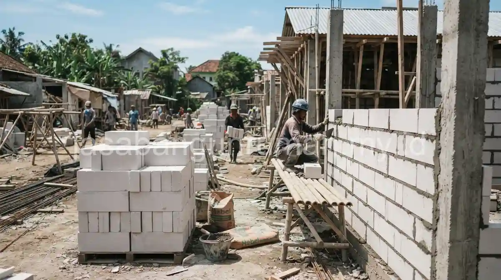

Daftar Isi
Rata-rata biaya renovasi dapur belakang dan atap rumah subsidi di Bekasi mulai dari Rp 20 juta, tergantung luas area dan jenis material yang dipilih, dengan tim yang memahami batasan renovasi resmi dari pemerintah.
Berapa Kisaran Biaya Renovasi Dapur Belakang dan Atap Rumah Subsidi di Bekasi?
Biaya renovasi dapur belakang rumah subsidi umumnya dimulai dari Rp 20 juta untuk luas area sekitar 3x2 meter menggunakan material standar, sedangkan biaya perbaikan atap bervariasi tergantung luas dan jenis penutup atap yang dipilih.
Perhitungan biaya ini mencakup pekerjaan dinding, atap sederhana, lantai, dan instalasi dasar seperti saluran air, namun belum termasuk perabotan dapur atau finishing tambahan lain.
Angka ini bersifat estimasi umum, sehingga sebaiknya tetap disesuaikan dengan kondisi lahan aktual melalui survey lokasi langsung bersama tim kontraktor yang berpengalaman di wilayah Bekasi.
Material Apa yang Direkomendasikan untuk Renovasi Rumah Subsidi di Wilayah Ini?
Material yang umum digunakan untuk renovasi rumah subsidi di Bekasi meliputi pasir hitam Babelan untuk campuran adukan, bata hebel untuk dinding tambahan karena bobotnya yang lebih ringan, serta semen ber-SNI untuk memastikan kualitas struktur tambahan.
| Bahan | Spesifikasi | Kelebihan | Rekomendasi Kegunaan |
|---|---|---|---|
| Pasir Hitam Babelan | Pasir lokal Bekasi untuk campuran adukan dan cor | Mudah didapat di wilayah Bekasi, harga relatif terjangkau | Adukan dinding dan cor lantai dapur |
| Bata Hebel | Bata ringan AAC untuk dinding tambahan | Bobot ringan, presisi ukuran, pemasangan cepat | Dinding tambahan dapur dan kamar mandi |
| Semen SNI | Semen dengan sertifikasi standar nasional | Kualitas terjamin, kekuatan struktur lebih terukur | Seluruh pekerjaan adukan dan cor |

Penggunaan material lokal seperti pasir hitam Babelan membantu menekan biaya pengiriman dibandingkan mendatangkan material dari luar wilayah, sehingga total biaya renovasi rumah subsidi Bekasi dapat lebih terkendali.
Apa Batasan Renovasi Rumah Subsidi yang Perlu Diperhatikan?
Kementerian PUPR umumnya menetapkan batasan bahwa fasad depan rumah subsidi tidak boleh diubah dalam lima tahun pertama kepemilikan, sedangkan renovasi pada bagian belakang seperti dapur dan area tambahan umumnya masih diperbolehkan.
Pemilik rumah subsidi yang ingin melakukan renovasi sebaiknya memastikan pekerjaan tetap berada dalam batas lahan milik sendiri dan tidak mengubah tampilan depan yang menghadap jalan, guna menghindari masalah administratif di kemudian hari.
Bagi warga Bekasi yang ingin merenovasi dapur atau atap rumah subsidi sesuai aturan yang berlaku, dapat menghubungi jasa renovasi rumah profesional kami untuk survey lokasi dan estimasi biaya gratis.